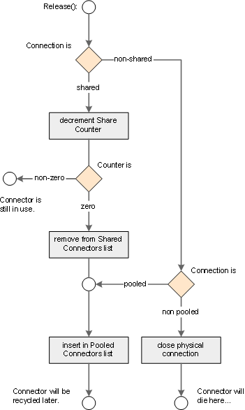

| ← Connector Pool | Up | ??? → |
Last update: 2002-06-21 19:00:00 by usp • Category: Internal documentation • Intended Audience: Npgsql Developers
This document describes the Npgsql Connector class.
The connector class is used internally in Npgsql to provide access to the physical connection to the PostgreSQL server.
There are currently no events.
Note Clearing the Pooled property of a shared connection has no effect (to be precice: it is rejected): As there might be a lot of connection objects spread over the whole application working with a single shared connection, it might be difficult to determine which Release() call will have the physical connection closed. In order not to introduce trouble in application programming, the described behaviour is choosen for shared connections.
Note Be careful using database transactions in conjunction with shared connectors: As transactions are coordinated on a connection basis, this might lead to unexpected, although correct behaviour. Some rules for working with shared connectors can be found here
| 
Releasing a connection requires the following steps, described in the following sections. At first there is a distinction between shared and nonshared connections: Shared connections ignore the Pooled property setting: They are always returned to the pooled connections list for recycling. The first step is to determine if the connector is still used by other connection objects. This is done by decrementing the connector's share counter. If it is non-zero, the connection is still in use and thereby should be left alone. In the counter reaches zero, the it is safe to remove the connector from the shared connectors list and insert it in the pooled connectors list for later recycling. Non-shared connectors are treated different: Their Pooled property determines whether the connector will be returned the the pooled connectors list or if the physical connection gets closed. After this the connection pool manager does not hold any reference to the connector, so it is up to the connection object to clear it's reference to the connector, too. This will make the connector subject to the garbage collection, since the last reference to it is remove and thus the object is not reachable from the application any more. |
Have a look here